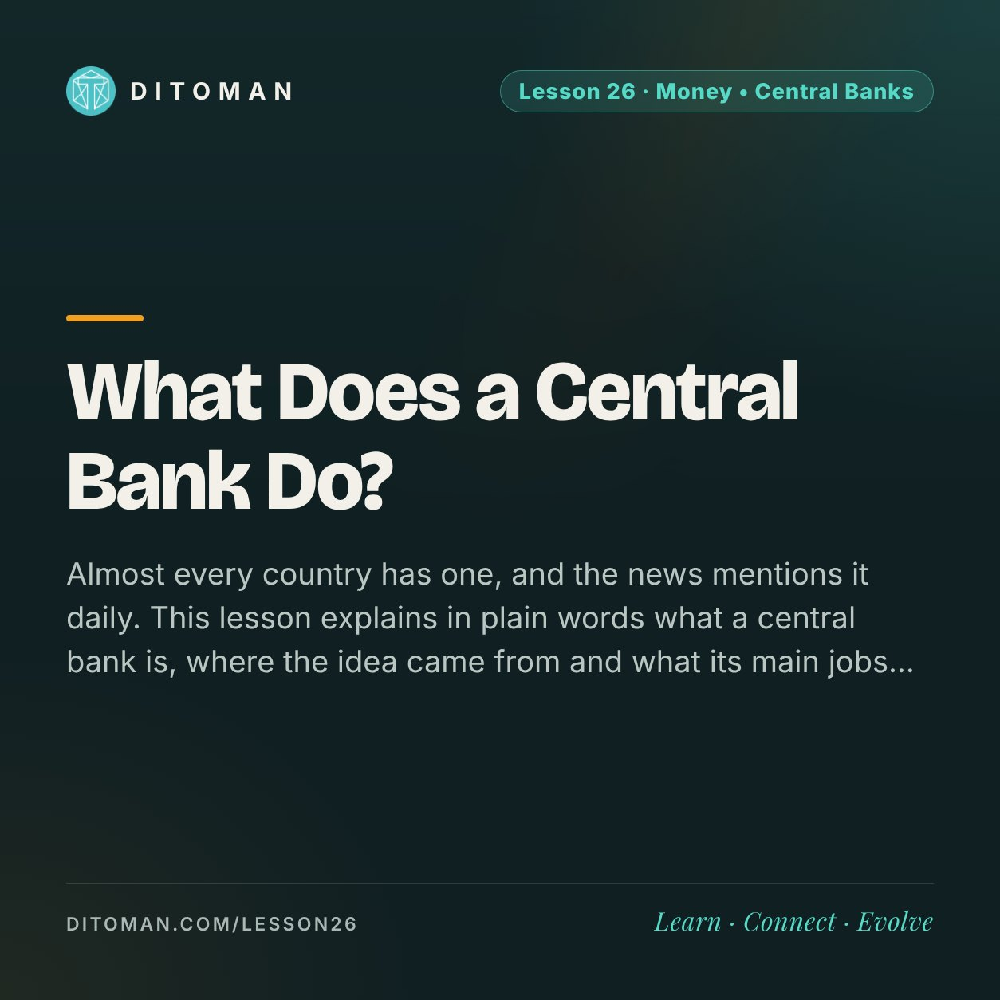

Was macht eine Zentralbank?
بانک مرکزی چه کار میکند؟
Fast jedes Land hat eine, und die Nachrichten erwähnen sie täglich. Diese Lektion erklärt in einfachen Worten, was eine Zentralbank ist, woher die Idee stammt und was ihre Hauptaufgaben sind.
تقریباً هر کشوری یکی دارد و خبرها هر روز اسمش را میآورند. این درس ساده توضیح میدهد بانک مرکزی چیست، ایدهاش از کجا آمد و کارهای اصلیاش کداماند.
Lektionsinhalt
محتوای درس
Lesen Sie die Lektion auf Englisch oder Persisch.
درس را به فارسی یا انگلیسی بخوانید.
Wenn es heißt „Die Zentralbank hat die Zinsen erhöht“ oder „Die Zentralbank hat Geld gedruckt“, klingt es wie eine einzelne mächtige Person. Tatsächlich ist sie eine Institution mit einer kurzen Liste von Aufgaben, und jede hat ihren Grund.
01. Was eine Zentralbank ist
Eine Zentralbank ist eine öffentliche Institution im Zentrum des Geldsystems eines Landes. Gewöhnliche Banken bedienen Kunden. Die Zentralbank bedient die Banken, den Staat und das System als Ganzes.
02. Wo die Idee begann
Die älteste Zentralbank der Welt ist die schwedische. Das Museum der Bank of England vermerkt, dass die Riksens Ständers Bank, heute Sveriges Riksbank, 1668 aus den Resten einer gescheiterten früheren Bank gegründet wurde, und nennt sie die älteste Zentralbank der Welt.
Als Nächstes kam 1694 die Bank of England, vor allem gegründet, um dem Staat Geld für einen Krieg zu leihen. Die ersten Zentralbanken entstanden also aus den Bedürfnissen von Staaten, nicht aus der Theorie.
03. Warum die USA spät kamen
Nach einer Finanzpanik 1907 waren die USA die einzige große Finanzmacht ohne Zentralbank. Präsident Woodrow Wilson unterzeichnete am 23. Dezember 1913 den Federal Reserve Act und schuf damit die Federal Reserve.
| Institution | Jahr | Hinweis |
|---|---|---|
| Schwedens Riksbank | 1668 | Als älteste Zentralbank der Welt beschrieben |
| Bank of England | 1694 | Vor allem gegründet, um dem Staat für einen Krieg Geld zu leihen |
| US-Notenbank Federal Reserve | 1913 | Gesetz unterzeichnet am 23. Dezember, nach der Panik von 1907 |
04. Die Hauptaufgaben
Die eigene Beschreibung der Bank of England zeigt die typische Liste.
Geld und Zahlungen: sie gibt die Banknoten aus und betreibt die Systeme, die Geld zwischen Banken bewegen.
Banken beaufsichtigen: über ihre Prudential Regulation Authority beaufsichtigt sie mehr als 1.300 Firmen, damit eine scheiternde Bank nicht den Rest mitreißt.
Zinsen: sie legt die Bank Rate fest, die Grundkosten des Leihens, die jeden anderen Zins beeinflussen.
Reserven: sie verwaltet die Goldreserven des Landes.
05. Die Aufgabe der Preisstabilität
Zinsen dienen einem Ziel. In Großbritannien legt die Regierung das Inflationsziel der Bank auf 2 % pro Jahr fest, gemessen an den Verbraucherpreisen. Eine Zinserhöhung dämpft meist Ausgaben und Preisanstieg; eine Senkung fördert meist Kredite und Ausgaben.
Lektion 12 zeigte, warum stabile Preise wichtig sind: Steigende Preise schmälern, was ein Gehalt kaufen kann. Die Zentralbank ist die Institution, die diese Erosion klein und vorhersehbar halten soll.
06. Kreditgeber letzter Instanz
In einer Panik kann einer gesunden Bank plötzlich das Bargeld fehlen, weil alle ihr Geld gleichzeitig zurückwollen. Die Zentralbank kann ihr gegen gute Sicherheiten Geld leihen. Das ist die Idee der „Bank der Banken“.
07. Was es nicht tut
Eine Zentralbank führt nicht Ihr Konto und verwahrt nicht Ihre Ersparnisse. Das tun Geschäftsbanken. Sie steuert auch nicht jeden Preis. Sie beeinflusst die Bedingungen, und die Ergebnisse kommen verzögert und unsicher.
08. Warum das mit digitalem Geld zusammenhängt
Lektion 11 fragte, was hinter einem digitalen Dollar steht, und Lektion 20, ob Banken verschwinden werden. Beide Fragen sind leichter, wenn man die Rolle der Zentralbank selbst kennt.
Was man daraus mitnimmt
Eine Zentralbank ist die öffentliche Institution im Zentrum des Geldsystems eines Landes.
Die älteste ist Schwedens Riksbank von 1668; die Bank of England folgte 1694; der US Federal Reserve Act wurde am 23. Dezember 1913 unterzeichnet.
Typische Aufgaben: Banknoten und Zahlungen, Bankenaufsicht, Festlegung des Leitzinses, Verwaltung der Reserven.
Zinsen dienen einem Ziel: stabilen Preisen, etwa dem 2-%-Ziel in Großbritannien.
Sie ist nicht Ihre Bank und steuert nicht jeden Preis.
وقتی میگویند «بانک مرکزی نرخ را بالا برد» یا «بانک مرکزی پول چاپ کرد»، از آن مثل یک آدم قدرتمند حرف میزنند. در واقع نهادی است با فهرست کوتاهی از وظایف، و هر وظیفه دلیلی دارد.
۰۱. بانک مرکزی چیست
بانک مرکزی نهادی عمومی در مرکز نظام پولی کشور است. بانکهای معمولی به مشتریها خدمت میدهند. بانک مرکزی به بانکها، دولت و کل نظام خدمت میدهد.
۰۲. ایده از کجا شروع شد
قدیمیترین بانک مرکزی دنیا سوئدی است. موزهی بانک انگلستان یادآوری میکند که «بانک مجلس ملک» (Riksens Ständers Bank)، که امروز «ریکسبانک سوئد» است، در ۱۶۶۸ از بازماندهی یک بانک ورشکستهی قبلی تأسیس شد و آن را قدیمیترین بانک مرکزی دنیا مینامد.
بانک انگلستان بعد از آن، در ۱۶۹۴ آمد و عمدتاً برای این ساخته شد که به دولت وام بدهد تا هزینهی یک جنگ تأمین شود. پس نخستین بانکهای مرکزی از نیاز دولتها متولد شدند، نه از نظریه.
۰۳. چرا آمریکا دیر رسید
بعد از هراس مالی ۱۹۰۷، آمریکا تنها قدرت مالی بزرگی بود که بانک مرکزی نداشت. رئیسجمهور وودرو ویلسون قانون فدرال رزرو را در ۲۳ دسامبر ۱۹۱۳ امضا کرد و فدرال رزرو شکل گرفت.
| نهاد | سال | توضیح |
|---|---|---|
| ریکسبانک سوئد | ۱۶۶۸ | قدیمیترین بانک مرکزی دنیا |
| بانک انگلستان | ۱۶۹۴ | عمدتاً برای وام به دولت در جنگ تأسیس شد |
| فدرال رزرو آمریکا | ۱۹۱۳ | قانون در ۲۳ دسامبر، پس از هراس ۱۹۰۷ امضا شد |
۰۴. وظایف اصلی
توصیف خود بانک انگلستان فهرست معمولی را نشان میدهد.
پول و پرداخت: اسکناس منتشر میکند و سامانههایی را اداره میکند که پول را بین بانکها جابهجا میکنند.
نظارت بر بانکها: از طریق «مرجع نظارت احتیاطی» خود بر بیش از ۱٬۳۰۰ مؤسسه نظارت میکند تا بانکی که شکست میخورد بقیه را با خود نکشد.
نرخ بهره: «نرخ بانکی» را تعیین میکند، یعنی هزینهی پایهی وامگرفتن که روی همهی نرخهای دیگر اثر میگذارد.
ذخایر: از ذخایر طلای کشور نگهداری میکند.
۰۵. وظیفهی ثبات قیمتها
نرخ بهره در خدمت یک هدف است. در بریتانیا دولت هدف تورم بانک را سالانه ۲٪ تعیین میکند که با قیمت مصرفکننده سنجیده میشود. بالا بردن نرخ معمولاً خرج و افزایش قیمتها را خنک میکند؛ پایین آوردنش معمولاً وامگرفتن و خرج را تشویق میکند.
درس ۱۲ نشان داد چرا قیمتهای باثبات مهماند: افزایش قیمتها آنچه حقوق میخرد را میفرساید. بانک مرکزی نهادی است که مأموریت دارد این فرسایش را کوچک و قابلپیشبینی نگه دارد.
۰۶. وامدهندهی آخرین پناه
در هراس مالی، یک بانک سالم هم ممکن است ناگهان نقدینگی نداشته باشد، چون همه یکجا پولشان را میخواهند. بانک مرکزی میتواند در برابر وثیقهی خوب به آن وام بدهد. ایدهی «بانکِ بانکها» همین است.
۰۷. کارهایی که نمیکند
بانک مرکزی حساب شما را اداره نمیکند و پسانداز شما را نگه نمیدارد؛ بانکهای تجاری این کار را میکنند. همهی قیمتها را هم کنترل نمیکند. بر شرایط اثر میگذارد و نتیجهها با تأخیر و عدم قطعیت میآیند.
۰۸. چرا به پول دیجیتال ربط دارد
درس ۱۱ پرسید پشتوانهی دلار دیجیتال چیست و درس ۲۰ پرسید آیا بانکها ناپدید میشوند. هر دو پرسش وقتی سادهتر میشوند که نقش خود بانک مرکزی را بدانید.
چه برداشتی کنیم
بانک مرکزی نهادی عمومی در مرکز نظام پولی کشور است.
قدیمیترین، ریکسبانک سوئد از ۱۶۶۸ است؛ بانک انگلستان در ۱۶۹۴ آمد؛ قانون فدرال رزرو آمریکا در ۲۳ دسامبر ۱۹۱۳ امضا شد.
وظایف معمول: اسکناس و پرداخت، نظارت بر بانکها، تعیین نرخ بهرهی پایه، نگهداری ذخایر.
نرخ بهره در خدمت یک هدف است: قیمتهای باثبات، مثلاً هدف ۲٪ در بریتانیا.
بانک شما نیست و همهی قیمتها را کنترل نمیکند.
Zwei verwandte Lektionen
دو درس مرتبط
Lektion 11 fragt, was hinter einem digitalen Dollar steht. Lektion 20 fragt, ob Banken verschwinden werden.
درس ۱۱ میپرسد پشت دلار دیجیتال چه چیزی ایستاده. درس ۲۰ میپرسد آیا بانکها ناپدید میشوند.
Schlüsselbegriffe
مفاهیم کلیدی
- Zentralbank
- Geschäftsbank
- Leitzins
- Inflationsziel
- Aufsicht
- Kreditgeber letzter Instanz
- Reserven
- بانک مرکزی
- بانک تجاری
- نرخ بهرهی پایه
- هدف تورم
- نظارت
- وامدهندهی آخرین پناه
- ذخایر
Lernziele
اهداف یادگیری
- Sagen, was eine Zentralbank ist.
- Nennen Sie drei frühe Zentralbanken und ihre Gründungsjahre.
- Nennen Sie die Hauptaufgaben einer Zentralbank.
- Erklären Sie, warum Zinsen der Preisstabilität dienen.
- Sagen, was eine Zentralbank nicht tut.
- بگویید بانک مرکزی چیست.
- سه بانک مرکزی اولیه و سالهایشان را نام ببرید.
- وظایف اصلی بانک مرکزی را فهرست کنید.
- توضیح بدهید چرا نرخ بهره در خدمت ثبات قیمتهاست.
- بگویید بانک مرکزی چه کارهایی نمیکند.
Quiz
آزمونک
Prüfen Sie, was hängen geblieben ist. Die Antwort steht unter jeder Frage.
ببین چه چیزی در ذهنت مانده. پاسخ زیر هر پرسش آمده است.
Frage 1
پرسش ۱
Welche gilt als älteste Zentralbank der Welt?
کدام قدیمیترین بانک مرکزی دنیا توصیف شده است؟
A. Die schwedische Riksbank, gegründet 1668
الف. ریکسبانک سوئد، ۱۶۶۸
B. Die Federal Reserve, 1913
ب. فدرال رزرو، ۱۹۱۳
C. Die Bank of England, 1694
ج. بانک انگلستان، ۱۶۹۴
Richtige Antwort: A
پاسخ درست: الف
Frage 2
پرسش ۲
Warum wurde die Bank of England 1694 gegründet?
بانک انگلستان در ۱۶۹۴ چرا ساخته شد؟
A. Vor allem, um dem Staat einen Krieg zu finanzieren
الف. عمدتاً برای وام به دولت در جنگ
B. Um Supermärkte zu betreiben
ب. برای ادارهی فروشگاهها
C. Um Gold abzubauen
ج. برای استخراج طلا
Richtige Antwort: A
پاسخ درست: الف
Frage 3
پرسش ۳
Wann unterzeichnete Woodrow Wilson den Federal Reserve Act?
ودرو ویلسون قانون فدرال رزرو را کی امضا کرد؟
A. 23. Dezember 1913
الف. ۲۳ دسامبر ۱۹۱۳
B. 1. Januar 1900
ب. ۱ ژانویه ۱۹۰۰
C. 4. Juli 1776
ج. ۴ ژوئیه ۱۷۷۶
Richtige Antwort: A
پاسخ درست: الف
Frage 4
پرسش ۴
Wie hoch ist das von der Regierung festgelegte Inflationsziel Großbritanniens?
هدف تورم بریتانیا که دولت تعیین میکند چند درصد است؟
A. 2 % pro Jahr
الف. سالانه ۲٪
B. 20 % pro Jahr
ب. سالانه ۲۰٪
C. 0,2 % pro Jahr
ج. سالانه ۰٫۲٪
Richtige Antwort: A
پاسخ درست: الف
Frage 5
پرسش ۵
Was davon ist KEINE typische Aufgabe einer Zentralbank?
کدام یک وظیفهی معمول بانک مرکزی نیست؟
A. Die privaten Sparkonten aller führen
الف. نگهداری حسابهای پسانداز شخصی همه
B. Den Leitzins festlegen
ب. تعیین نرخ بهرهی پایه
C. Banken beaufsichtigen
ج. نظارت بر بانکها
Richtige Antwort: A
پاسخ درست: الف
Quellen
منابع
- Bank of England Museum: die Riksens Ständers Bank (1668) als älteste Zentralbank der Welt; die Bank of England, 1694
- Bank of England: Was die Bank of England tut (Banknoten, Zahlungen, Aufsicht über mehr als 1.300 Firmen, Bank Rate, Goldreserven)
- Bank of England: Inflation und das von der Regierung gesetzte 2-%-Ziel
- Federal Reserve History: der Federal Reserve Act, unterzeichnet am 23. Dezember 1913
Die Einzelheiten der Aufgaben stammen von der Bank of England als typischem Beispiel; andere Zentralbanken unterscheiden sich. Aktuelle Zinsniveaus werden nicht genannt, weil sie sich ändern. Allgemeine Erklärung, keine Finanzberatung.
جزئیات وظایف از بانک انگلستان بهعنوان یک نمونهی معمول گرفته شده؛ بانکهای مرکزی دیگر متفاوتاند. سطح فعلی نرخ بهره نیامده چون تغییر میکند. توضیح عمومی است، نه مشاورهی مالی.
با هم دنبال میکنیمBleiben Sie dran
Neue Lektionen werden zuerst auf Ditomans Kanälen angekündigt.
درسهای تازه اول در کانالهای دیتومان معرفی میشوند.